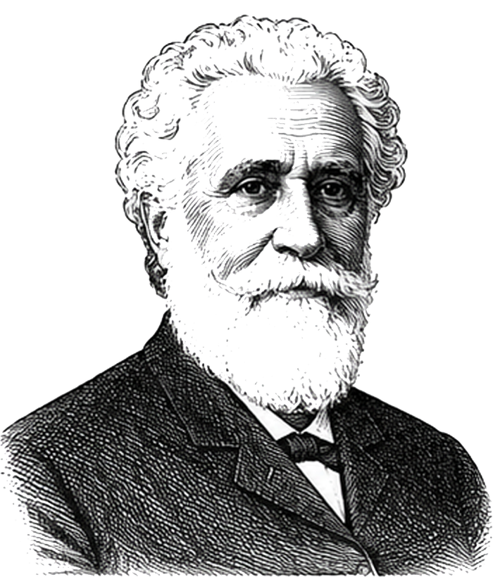
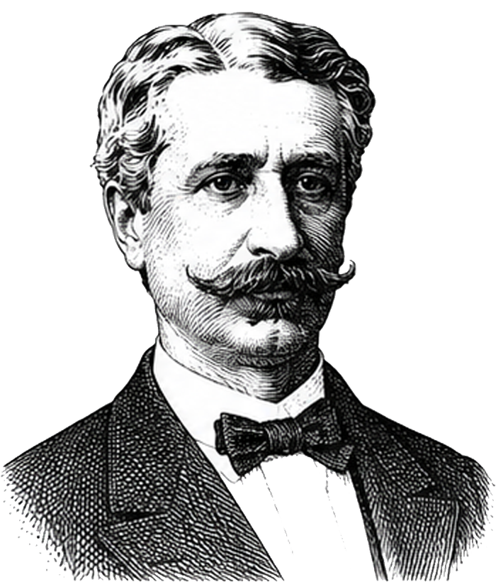
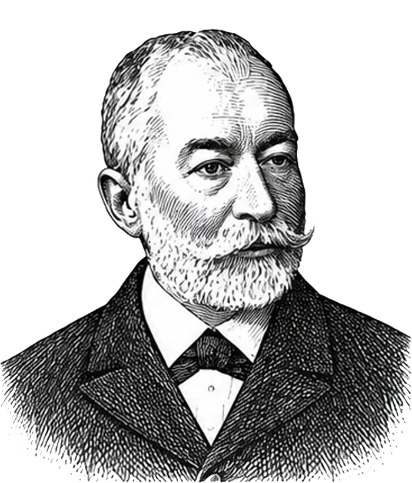
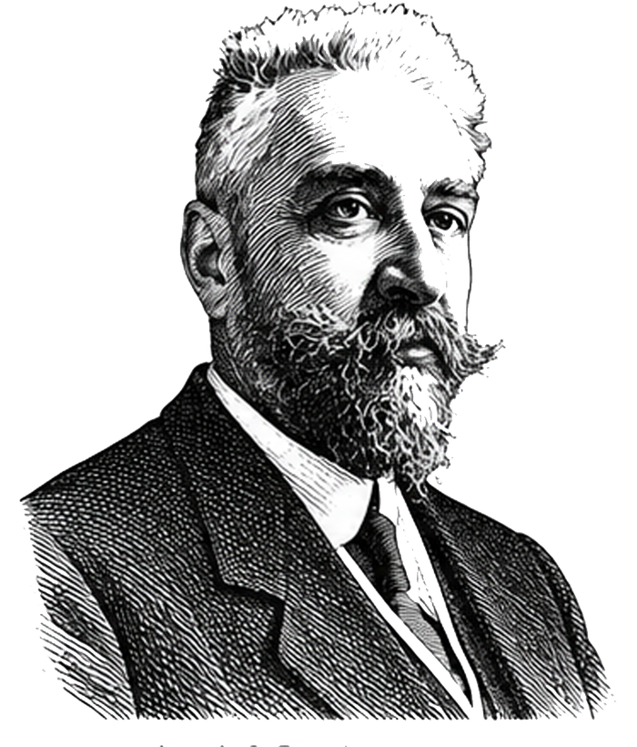
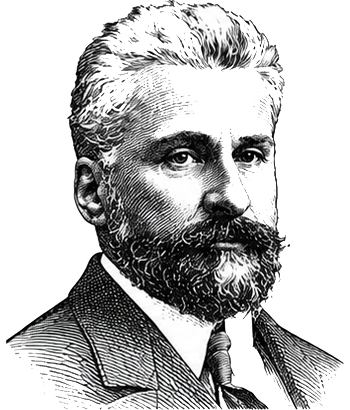
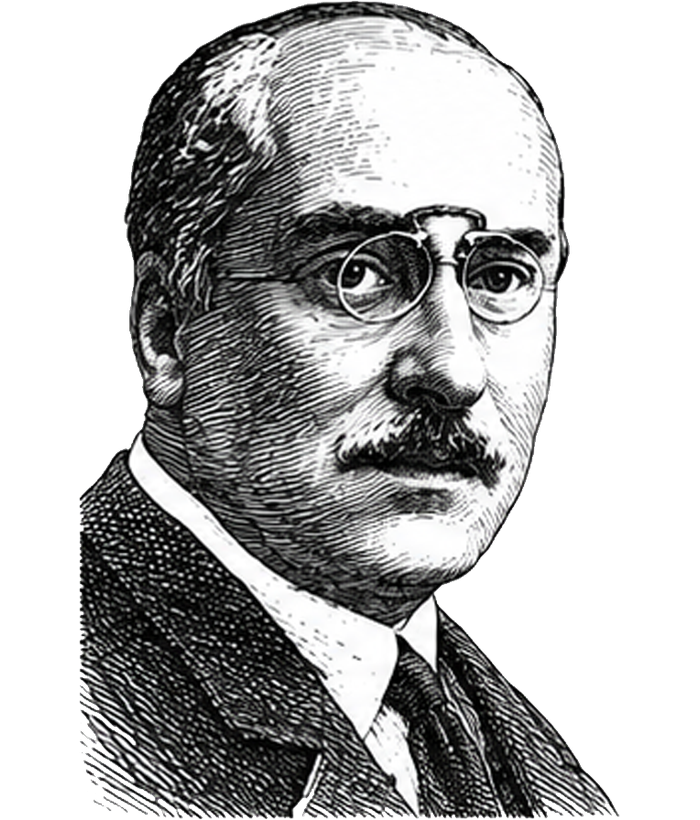
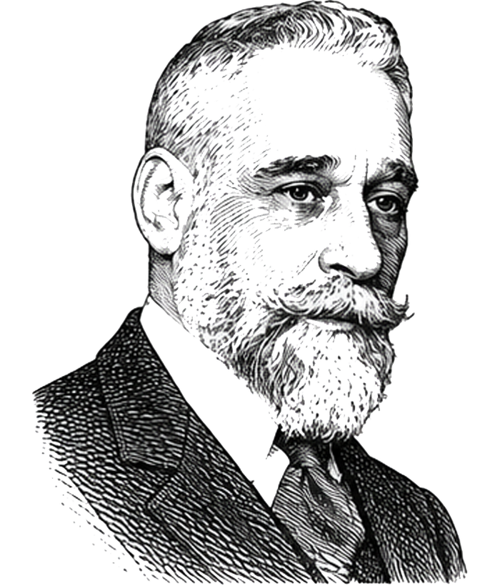

1. Scala de răspuns
Fiecare afirmație are o valoare numerică:
- -2 Total dezacord
- -1 Mai degrabă nu
- 0 Neutru / nu știu
- +1 Mai degrabă da
- +2 Total de acord
Platformă de orientare civică pentru studenți
Răspunzi la 40 de afirmații, primești poziția ta politică, vezi compatibilitatea cu liberalismul democratic și înțelegi formula de calcul.
Testul
Platforma compară răspunsurile tale cu un profil doctrinar liberal: piață liberă, stat de drept, administrație eficientă, orientare euro-atlantică și responsabilitate civică.
Compass Liberal
Înainte de întrebări vei completa datele necesare pentru raport și consimțămintele separate pentru prelucrare, contactare și profilul politic inferat.
Rezultat personalizat
Pregătim raportul.
Profil în calcul
Metodologie
Platforma este inspirată de instrumentele de tip Voting Advice Application: răspunzi la afirmații, răspunsurile sunt transformate în scoruri, iar scorurile sunt comparate cu repere doctrinare declarate.
Fiecare afirmație are o valoare numerică:
Fiecare întrebare influențează una sau două axe. Scorul unei axe este media ponderată a contribuțiilor, normalizată între -100 și +100.
Compatibilitatea doctrinară PNL este calculată separat de compas:
| 25% | Economie de piață |
|---|---|
| 20% | Fiscalitate redusă și predictibilă |
| 15% | Stat suplu și administrație eficientă |
| 15% | Orientare UE / NATO / modernizare occidentală |
| 10% | Proprietate privată și antreprenoriat |
| 10% | Stat de drept, merit și anticorupție |
| 5% | Tradiție democratică și identitate națională moderată |
Scorul nu spune cu cine trebuie să votezi și nu reprezintă o recomandare electorală. El arată proximități valorice, cu marjă de interpretare, în funcție de răspunsurile date.
Repere parlamentare
Compasul folosește partidele parlamentare ca repere de citire, nu ca recomandare de vot. Pozițiile sunt construite din clasificările publice privind spectrul politic și ideologiile asumate în spațiul public.
Conservatorism social, naționalism de stânga, populism de stânga.
Naționalism românesc, unionism, euroscepticism, populism de dreapta.
Liberalism conservator, conservatorism social, creștin-democrație.
Europenism, liberalism, liberalism economic.
Regionalism, liberalism conservator, europenism.
Naționalism românesc, populism de dreapta, conservatorism social.
Naționalism românesc, suveranism, conservatorism național, dreapta creștină.
CSL Timiș
Liberalismul pornește de la o idee simplă: o societate prosperă se construiește atunci când oamenii au libertatea de a învăța, de a munci, de a crea și de a-și valorifica potențialul.
Libertatea individuală, inițiativa, responsabilitatea și meritul reprezintă fundamentele acestei viziuni. O economie sănătoasă, instituții solide și o societate deschisă apar atunci când oamenii pot lua decizii, își pot asuma responsabilitatea pentru ele și beneficiază de reguli clare, aplicate în mod egal.
Liberalismul privește statul ca pe un partener al cetățeanului, nu ca pe un înlocuitor al inițiativei individuale. Rolul său este să garanteze statul de drept, să ofere servicii publice eficiente, să creeze un cadru predictibil și să protejeze concurența loială.
Prosperitatea nu este rezultatul unei decizii administrative, ci al milioanelor de oameni care muncesc, investesc, inovează și construiesc. Antreprenorii, profesioniștii, cercetătorii, profesorii, studenții și toți cei care creează valoare contribuie, zi de zi, la dezvoltarea societății.
De aceea, liberalismul susține o economie de piață competitivă, în care succesul este construit prin muncă, competență și inițiativă, iar regulile sunt aceleași pentru toți.
Partidul Național Liberal a fost fondat la 24 mai 1875, într-o perioadă în care România își definea instituțiile și direcția de dezvoltare. De-a lungul istoriei sale, PNL a fost asociat cu unele dintre cele mai importante momente din procesul de modernizare al statului român.
Lideri precum Ion C. Brătianu, Ion I. C. Brătianu, Vintilă Brătianu, I. G. Duca sau Dimitrie A. Sturdza au contribuit la consolidarea instituțiilor statului, la afirmarea independenței României, la dezvoltarea administrației moderne, la promovarea educației și la construcția cadrului constituțional al României interbelice.
Independența din 1877, dezvoltarea infrastructurii, modernizarea administrației, extinderea economiei naționale, participarea la realizarea României Mari și adoptarea Constituției din 1923 sunt repere istorice care au marcat evoluția țării și în care liderii liberali au avut un rol important.
Deviza istorică „Prin noi înșine” exprimă una dintre ideile definitorii ale liberalismului românesc: încrederea în capacitatea oamenilor, în educație, în muncă, în inițiativă și în dezvoltarea unei economii competitive, capabile să creeze prosperitate pe termen lung.
Astăzi, Partidul Național Liberal își asumă valorile liberalismului democratic și este parte a familiei politice europene de centru-dreapta.
Liberalismul înseamnă echilibru între libertate și responsabilitate. Înseamnă un stat care stabilește reguli clare, protejează interesul public și creează condițiile necesare pentru ca oamenii și comunitățile să se dezvolte.
Clubul Studenților Liberali Timiș este comunitatea studenților care aleg să transforme aceste valori în acțiune.
CSL Timiș este locul în care tinerii pot învăța, pot dezbate, pot organiza proiecte și pot înțelege mai bine modul în care funcționează instituțiile democratice și administrația publică.
Prin conferințe, dezbateri, traininguri, campanii și proiecte dedicate comunității, membrii CSL Timiș își dezvoltă competențe de comunicare, leadership, organizare și lucru în echipă, construind în același timp o rețea de oameni care împărtășesc aceleași valori.
CSL Timiș promovează implicarea civică, dialogul, responsabilitatea și dorința de a contribui la dezvoltarea comunității.
Pentru noi, politica înseamnă, înainte de toate, oameni, idei și proiecte. Înseamnă libertatea de a construi, curajul de a propune și responsabilitatea de a transforma ideile în rezultate.
Învață. Construiește. Contează.
Lideri istorici

Ion C. Brătianu 1875-1891
Dumitru Brătianu 1891-1892
Dimitrie A. Sturdza 1892-1909
Ion I. C. Brătianu 1909-1927
Vintilă Brătianu 1927-1930
I. G. Duca 1930-1933
Constantin I. C. Brătianu 1934-1947GDPR
Platforma colectează date de contact, date educaționale și răspunsuri politice. Răspunsurile pot indica opinii politice, deci sunt tratate ca date sensibile și cer consimțământ explicit.
Nume, prenume, telefon, email, data nașterii, universitate, facultate, an de studiu, specializare, sursa prin care ai auzit de platformă, răspunsurile la test, scorurile calculate și acordurile bifate.
Pentru generarea raportului, validarea consimțămintelor, analiza agregată a interesului civic și, doar dacă bifezi separat, pentru contactare de către CSL Timiș.
Datele sunt transmise către un Google Sheet privat, administrat de CSL Timiș pentru această platformă. Accesul este restricționat la echipa autorizată care gestionează rezultatele, contactarea participanților și solicitările privind datele personale.
Poți solicita acces la date, rectificarea lor, ștergerea datelor, restricționarea prelucrării sau retragerea consimțământului. Cererile se transmit către echipa CSL Timiș prin datele de contact afișate pe această pagină.
Datele colectate prin Compass Liberal sunt folosite pentru generarea rezultatului, pentru administrarea platformei și, doar în baza acordului separat, pentru contactare. Răspunsurile politice nu sunt publicate, nu sunt vândute și nu sunt folosite pentru targetare fără consimțământul explicit al participantului.